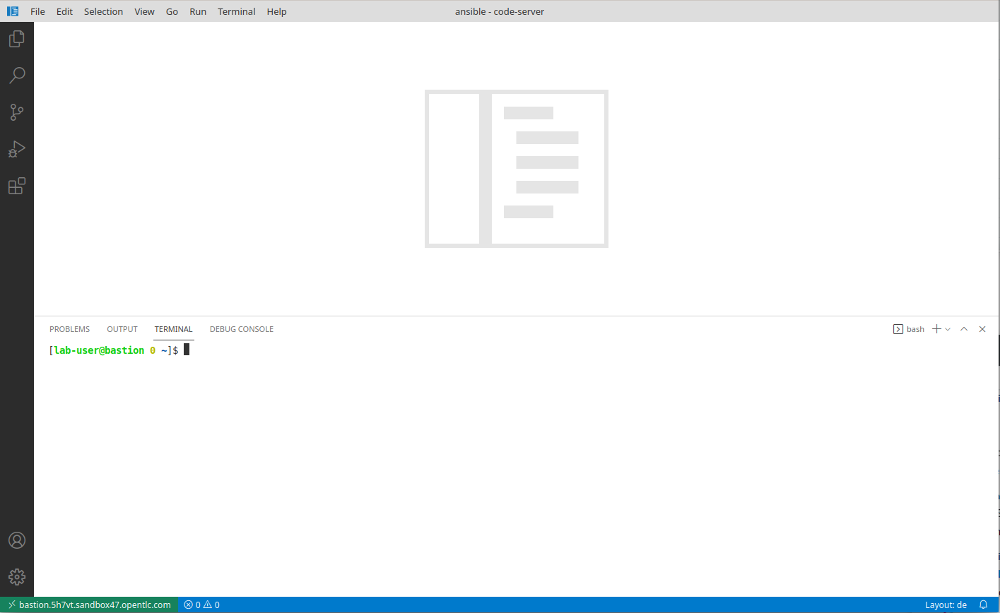

Introduction to your lab
About this Lab
You have already used Ansible Automation quite a bit and have started to look into the automation controller (formerly know as Ansible Tower, part of the Red Hat Ansible Automation Platform)? Or you are already using automation controller? Cool. We prepared this lab to give a hands-on introduction to some of the more advanced features of the automation controller. You’ll learn about:
-
Using command line tools to manage automation controller
-
automation controller clustering
-
Working with Instance Groups
-
Ways to provide inventories (importing inventory, dynamic inventory)
-
The Smart Inventory feature
-
Optional: How to structure Ansible content in Git repos
-
Optional: How to work with the automation controller API
So little time and so much to do…
To be honest we got carried away slightly while trying to press all these cool features into a two-hours lab session. We decided to flag the last two chapters as “optional” instead of taking them out. If you find the time to run them, cool! If not, the lab guide will stay where it is, feel free to go through these lab tasks later (you don’t need an automation controller cluster for this).
Want to Use this Lab after the event?
Definitely, the lab documentation is available here:
https://ansible-labs-crew.github.io/
If you want to contribute to the workshop to make it better, file an issue in our GitHub project.
Your Ansible Automation Platform Lab Environment
In this lab you work in a pre-configured lab environment. You will have access to the following hosts:
| Role | URL for External Access (if applicable) | Hostname Internal |
|---|---|---|
| Automation controller node 1 | autoctl1.<GUID>.<SANDBOXID>.opentlc.com | autoctl1.<GUID>.internal |
| Automation controller node 2 | autoctl2.<GUID>.<SANDBOXID>.opentlc.com | autoctl2.<GUID>.internal |
| Automation controller node 3 | autoctl3.<GUID>.<SANDBOXID>.opentlc.com | autoctl3.<GUID>.internal |
| Visual Code Web UI | bastion.<GUID>.<SANDBOXID>.opentlc.com | |
| Database Node | pgdb.<GUID>.internal | |
| Managed RHEL8 Host 1 | node1.<GUID>.internal | |
| Managed RHEL8 Host 2 | node2.<GUID>.internal | |
| Managed RHEL8 Host 3 | node3.<GUID>.internal |
The lab environments in this session have a <SANDBOXID> and are separated by numbered <GUID> accounts. You will be able to access the hosts using the external hostnames. Internally the hosts have different names as shown above. Follow the instructions given by the lab facilitators to receive the values for <GUID> and <SANDBOXID>!
Ansible Automation Platform (AAP) has already been installed and licensed for you, the web UI will be reachable over HTTP/HTTPS.
In general, whenever you need a password, it’s the same one provided for lab access.
As you can see the lab environment is pretty extensive. You basically have:
-
A bastion host running the VSCode server.
-
A three-node automation controller cluster with a separate DB host, accessed via SSH or web UI
-
Three managed RHEL 8 hosts
Working the Lab
Some hints to get you started:
-
Don’t type everything manually, use copy & paste from the browser when appropriate. But don’t stop to think and understand… ;-)
-
To edit files or open a terminal window, we provide VS Code, basically the great VSCode Editor running in your browser. It’s running on the bastion node and can be accessed through the URL https://bastion.<GUID>.<SANDBOXID>.opentlc.com
Commands you are supposed to run are shown with or without the expected output, whatever makes more sense in the context.
The command line can wrap on the HTML page from time to time. Therefore the output is often separated from the command line for better readability by an empty line. Anyway, the line you should actually run should be recognizable by the prompt. :-)
Accessing your Lab Environment
You’ll get the access information for your lab (URL’s, password) from your lab facilitator. Your main points of contact with the lab are the automation controller node’s web UI and VS Code in your browser. You’ll use VS Code to:
-
Open virtual terminals
-
Edit files
Now open VS Code in your browser using the link provided or use this link by replacing <GUID> by your GUID (a four digits hexacode) and the <SANDBOXID>:
https://bastion.<GUID>.<SANDBOXID>.opentlc.com

Use the password provided to login into the VS Code server web UI, you can close the Welcome tab. Now open a new terminal by heading to the menu item Terminal at the top of the page and select New Terminal. A new section will appear in the lower half of the screen and you will be greeted with a prompt:

If unsure about the usage, read the Visual Studio Code Server introduction, to learn more about how to create and edit files, and to work with the Terminal.
There is a known bug when using VSCode in the Chrome browser: Under some circumstances/locale settings the keyboard layout in the terminal window (not the visual editor) is mixed up. It works fine in Firefox, though.
Direct Access using SSH
Last but not least you can of course use SSH directly to access the bastion node when you have an SSH client ready to go and know your way around:
ssh lab-user@bastion.<GUID>.<SANDBOXID>.opentlc.com
The password is still the same.
Congrats, you now have a shell terminal on your bastion node. From here you run commands or access the other hosts in your lab environment if a lab task requires it.
The user you are accessing the terminal as is lab-user, but your bastion node is setup to let you become root using sudo without a password.
Managed Nodes hostnames
As mentioned you can construct your internal hostnames with your <GUID>. But there is an easier way: On your bastion host you can find an Ansible inventory file for your environment. Just look at it in your VSCode terminal and you’ll get the internal hostnames:
[lab-user@bastion ~]$ cat /etc/ansible/hosts
Install Ansible
Before we can get started writing Ansible Playbooks, we have to install Ansible first. We did all the preparation for you, so the installation is super easy:
[lab-user@bastion ~]$ sudo yum -y install ansible